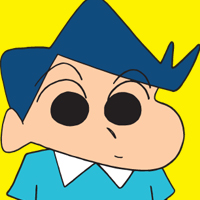
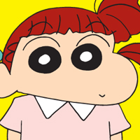
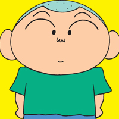
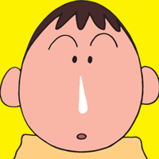
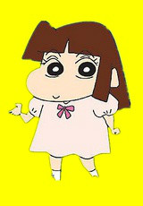

登场角色
小新同学
-

风间彻
向日葵班学生。 平时有点装腔作势，自尊心很高，但有时也有出乎意料的温柔的一面的优等生。幼儿园外，通过各种各样的补习班和教室。新之助和经常碰到。但很快就会和好。 -

樱田妮妮
向日葵班学生。 喜欢当别人的传闻的女儿。喜欢玩超现实的过家家，但被邀请的朋友稍稍有些为难。跟妈妈一样，不如意，常常在厕所或没有人的角落里拿兔子拳打脚踢来出气……很可怕。 -

佐藤正男（南）或正雄
向日葵班学生。 感觉很弱，马上提心吊胆了被欺负的孩子。在朋友之间，脸的形式很像“饭团”。非常认真的地方也有，整理东西。喜欢小爱。 -

阿呆
向日葵班学生。 总是发呆，拖着鼻涕，说话的时候很敏锐。特长是用鼻涕制作螺旋桨和东京铁塔的事。最高兴的时候，流鼻涕快速旋转。 -

小爱（酢乙女爱）
千金大小姐。转学生，来到双叶幼稚园感受平民生活。 曾用一些爱的眼神来获取男生的心，后来把所有的爱情投到小新身上。